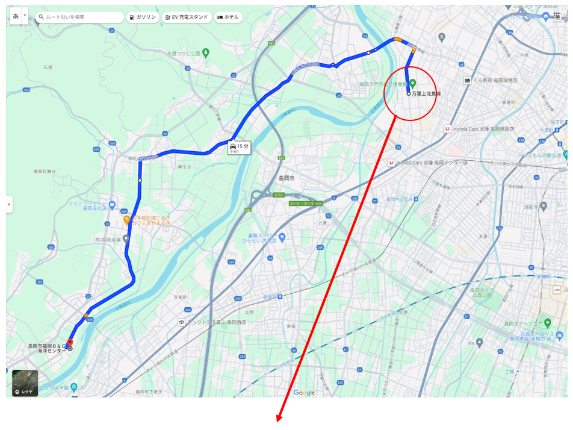
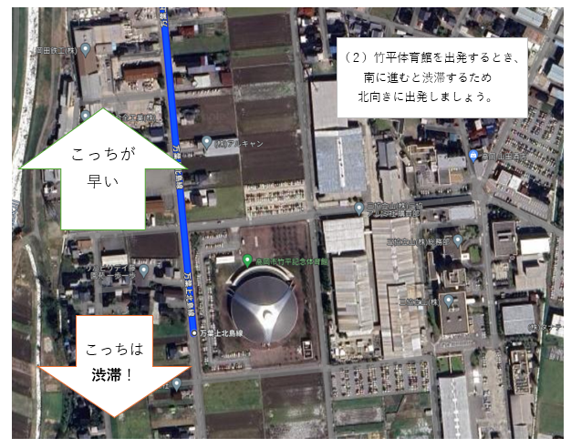

★ 渋滞を避けてBGに行こう大作戦 ★
▼作戦
（１） 竹平体育館で出発する時点で、お手元のナビにてBGを設定しましょう。
・目的地
富山県高岡市福岡町三日市５７９−１
高岡市福岡Ｂ＆Ｇ海洋センター
（２） 竹平体育館を出発するとき、一旦ナビを無視して北側に向かいましょう。
（３）1つ目の信号「波岡」交差点で左折し、裏道に入っていきます。
（４）あとはナビに従いつつ、8号線に戻されないよう裏道で進んでいきましょう。
▼全体のルート（参考）

